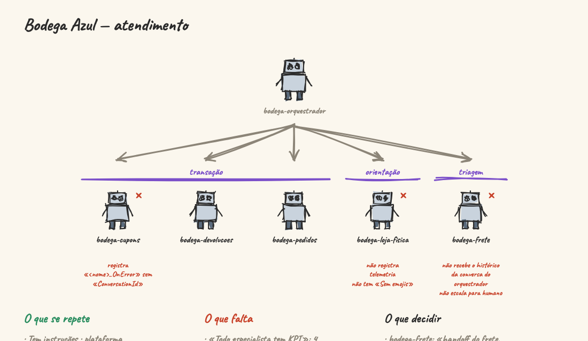
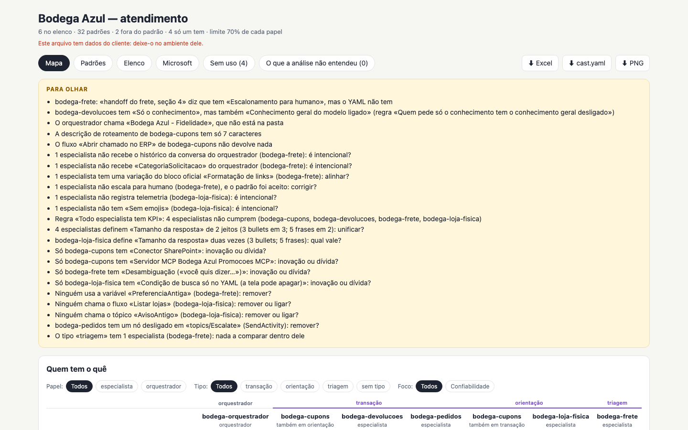
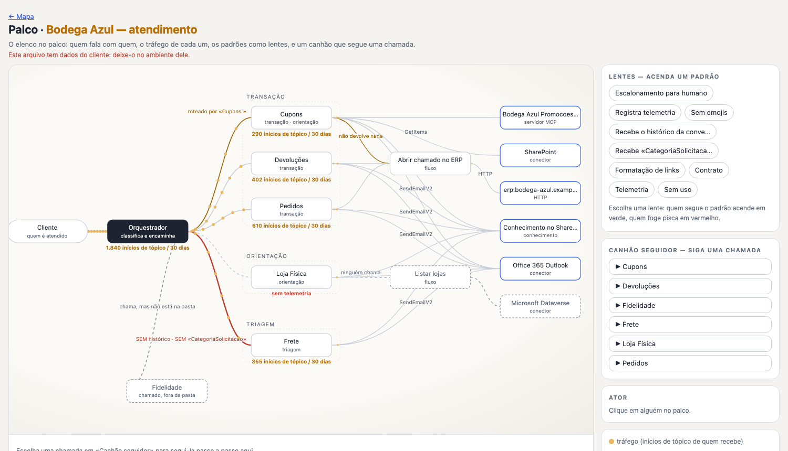
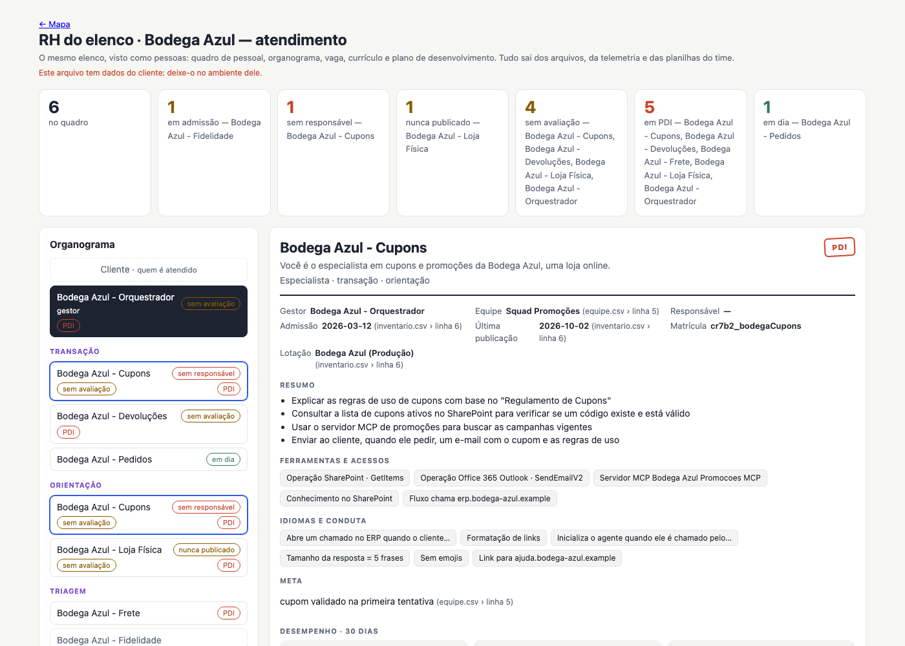

Bodega Azul — atendimento An orchestrator and five specialists of a made-up online shop, run with a made-up export of Application Insights. On purpose: shipping does not escalate to a person and gets no conversation history, the store logs no telemetry, coupons spells its error event another way and calls a flow that returns nothing, shipping's event did not fire in 30 days, and a few things nobody uses. MapStageRHDiagrams (Mermaid)LessonWorkbook (.xlsx)Cast file (.yaml)cast-list
Point it at your Copilot Studio agents, cloned. See what they all do — in their YAML and in the text of their instructions — who is off it, what only one has, what the orchestrator passes on, which events they log and whether they fire, and what nobody uses: with the file and line behind every finding. Decide in Excel; the next run checks what you decided. Node alone: no model, no install, no network.

The example — open the map, play the lesson, download the workbook
What it finds — «to look at», in groups
- Contradictions — what people say and the YAML does not agree; a rule that confronts the text with the setup: «has “Only the knowledge”, but also “The model's general knowledge on”».
- Contract and telemetry — the orchestrator calling one not in the folder, a routing description of 7 characters, a flow that returns nothing, an event spelt another way («the same event?»), an event that did not fire in 30 days, one with no line in the telemetry.
- Off pattern — «1 specialist does not escalate to a person (shipping): on purpose?»; a variation of an official block, a text rule set in two ways or twice in one agent. Patterns are found per role and per type of specialist.
- Rules — from the team's profile («every specialist has a KPI»).
- Only one has it — innovation to spread, or debt to remove. Folded at first in the map.
- Unused — a topic nobody can reach, a variable nobody names, a flow nobody calls, a node switched off. Folded at first too.
- Not understood — a file it could not read is told; the rest is read anyway.
The stage — show it in a meeting

The traffic moving along the arrows (each one's topic starts, from the export), lenses that light who follows a pattern and who is off, and a follow spot that walks each call of the orchestrator and stops where it breaks. Click someone for its card.The diagrams — the cast in Mermaid, for the team's docs
--diagrams writes what was read as plain Mermaid: the topology, a sequence per call of the orchestrator, a lens per pattern and the anatomy of each type, in one Markdown document and one .mmd each. It shows on GitHub, in a wiki or in VS Code with nothing of ours, and draws in chalk-talk too.
The example's diagrams, on GitHub
The cast as people — the RH

The same cast for whoever thinks in HR terms: who is being hired, who has no owner, who was never published, the post of each role and type, and a résumé each — with the development plan made of what «to look at» says about that one alone. Nothing invented: no goal, owner or number the files do not have.Bring what you already have
- The admin center's inventory or the team's own spreadsheet (
--declared, CSV or .xlsx, no template): the column of the agent is found by its values, and every other column becomes what people declared — owner, KPI — with the file and line. - An export of Application Insights (
--telemetry): one query, ready to copy, says which events fired and how many times. Nothing goes over the network.